Joins plots together
create.multiplot.RdMerges together multiple plots in the specified layout
Usage
create.multiplot(
plot.objects,
filename = NULL,
panel.heights = c(1,1),
panel.widths = 1,
main = NULL,
main.just = "center",
main.x = 0.5,
main.y = 0.5,
main.cex = 3,
main.key.padding = 1,
ylab.padding = 5,
xlab.padding = 5,
xlab.to.xaxis.padding = 2,
right.padding = 1,
left.padding = 1,
top.padding = 0.5,
bottom.padding = 0.5,
xlab.label = NULL,
ylab.label = NULL,
xlab.cex = 2,
ylab.cex = 2,
xlab.top.label = NULL,
xaxis.top.tck.lab = NULL,
xat.top = TRUE,
xlab.top.cex = 2,
xaxis.top.idx = NULL,
xlab.top.col = 'black',
xlab.top.just = "center",
xlab.top.x = 0.5,
xlab.top.y = 0,
xaxis.cex = 1.5,
yaxis.cex = 1.5,
xaxis.labels = TRUE,
yaxis.labels = TRUE,
xaxis.alternating = 1,
yaxis.alternating = 1,
xat = TRUE,
yat = TRUE,
xlimits = NULL,
ylimits = NULL,
xaxis.rot = 0,
xaxis.rot.top = 0,
xaxis.fontface = 'bold',
y.tck.dist=0.5,
x.tck.dist=0.5,
yaxis.fontface = 'bold',
x.spacing = 1,
y.spacing = 1,
x.relation = 'same',
y.relation = 'same',
xaxis.tck = c(0.75,0.75),
yaxis.tck = c(0.75,0.75),
axes.lwd = 1.5,
key.right.padding = 1,
key.left.padding = 1,
key.bottom.padding = 1,
xlab.key.padding = 0.5,
height = 6,
width = 6,
size.units = 'in',
resolution = 1600,
enable.warnings = FALSE,
key = list(text = list(lab = c(''))),
legend = NULL,
print.new.legend = FALSE,
merge.legends = FALSE,
plot.layout = c(1,length(plot.objects)),
layout.skip=rep(FALSE,length(plot.objects)),
description = 'Created with BoutrosLab.plotting.general',
plot.labels.to.retrieve = NULL,
style = 'BoutrosLab',
remove.all.border.lines = FALSE,
preload.default = 'custom',
plot.for.carry.over.when.same = 1,
get.dendrogram.from = NULL,
dendrogram.right.size = NULL,
dendrogram.right.x = NULL,
dendrogram.right.y = NULL,
dendrogram.top.size = NULL,
dendrogram.top.x = NULL,
dendrogram.top.y = NULL,
use.legacy.settings = FALSE
);Arguments
- plot.objects
A list of plot objects. Goes in this order: Bottom Left, Bottom Right, Top Left, Top Right
- filename
Filename for tiff output, or if NULL returns the trellis object itself
- panel.heights
A vector specifying relative heights of the panels. Default is c(1,1)
- panel.widths
A vector specifying relative widths of the panels. Default is 1
- main
The main title for the plot (space is reclaimed if NULL)
- main.just
The justification of the main title for the plot, default is centered
- main.x
The x location of the main title, deault is 0.5
- main.y
The y location of the main title, default is 0.5
- main.cex
Size of text for main plot title, defaults to 3
- main.key.padding
A number specifying the distance of main to plot, defaults to 1
- ylab.padding
A number specifying the distance of y-axis to plot, defaults to 5
- xlab.padding
A number specifying the distance of x-axis to plot, defaults to 5
- xlab.to.xaxis.padding
A number specifying the distance between xaxis and xlabel, defaults to 2
- right.padding
A number specifying the distance to the right margin, defaults to 1
- left.padding
A number specifying the distance to the left margin, defaults to 1
- top.padding
A number specifying the distance to the top margin, defaults to 0.5
- bottom.padding
A number specifying the distance to the bottom margin, defaults to 0.5
- xlab.label
The label for the x-axis
- ylab.label
The label for the y-axis
- xlab.cex
Size of x-axis labels, defaults to 1.5
- ylab.cex
Size of y-axis labels, defaults to 1.5
- xlab.top.label
The label for the top x-axis
- xaxis.top.tck.lab
A vector of tick labels for the top x-axis. Currently only supports labelling a single top x-axis in the plot
- xat.top
A vector specifying tick positions for the top x-axis. Currently only supports a single top x-axis in the plot. Note when labelling a top x-axis even if you're not labelling a bottom x-axis labels xat must still be defined (eg as a list of empty vectors) or it will lead to unpredictable labelling
- xlab.top.cex
Size of top x-axis label
- xaxis.top.idx
Index of the plot for which you want top x-axis tick labels. Defaults to the last plot specified. Currently only supports one plot.
- xlab.top.col
Colour of the top x-axis label
- xlab.top.just
Justification of the top x-axis label, defaults to centered
- xlab.top.x
The x location of the top x-axis label
- xlab.top.y
The y location of the top y-axis label
- xaxis.cex
Size of x-axis scales, defaults to 2
- yaxis.cex
Size of y-axis scales, defaults to 2
- xaxis.labels
Names to give the x-axis labels, defaults to lattice default behaviour
- yaxis.labels
Names to give the y-axis labels, defaults to lattice default behaviour
- xaxis.alternating
Gives control of axis tick marks (1 bottom only, 2 top only, 3 both top and bottom), default to 1 which means only bottom axis tick marks are drawn, set to 0 to remove tick marks
- yaxis.alternating
Gives control of axis labelling, defaults to 1 which means only left axis labels are drawn, set to 0 to remove tick marks
- xat
Vector listing where the x-axis labels should be drawn
- yat
Vector listing where the y-axis labels should be drawn
- xlimits
Vector listing where the x-axis limits should be for each subplot. Defaults to NULL to let R figure out the limits
- ylimits
Vector listing where the y-axis limits should be for each subplot. Defaults to NULL to let R figure out the limits
- xaxis.rot
Rotation of bottom x-axis labels
- xaxis.rot.top
Rotation of top x-axis labels
- xaxis.fontface
Fontface for the x-axis scales
- yaxis.fontface
Fontface for the y-axis scales
- x.spacing
A number specifying the horizontal distance between plots, defaults to 1
- y.spacing
A number specifying the vertical distance between plots, defaults to 1
- x.relation
A character string that determines how x-axis limits are calculated for each panel. Possible values are “same” (default), “free” and “sliced”. See ?xyplot
- y.relation
A character string that determines how y-axis limits are calculated for each panel. Possible values are “same” (default), “free” and “sliced”. See ?xyplot
- xaxis.tck
A vector of length 2 that determines the size of x-axis tick marks. Defaults to c(0.75, 0.75).
- yaxis.tck
A vector of length 2 that determines the size of y-axis tick marks. Defaults to c(0.75, 0.75).
- x.tck.dist
A number specifying the distance between x-axis labels and tick marks. Defaults to 0.5.
- y.tck.dist
A number specifying the distance between y-axis labels and tick marks. Defaults to 0.5.
- axes.lwd
Width of border. Note it also changes the colourkey border and ticks
- key.right.padding
Space between right-most plot and any keys/legends
- key.left.padding
Space between left-most plot and any keys/legends
- key.bottom.padding
Space between bottom-most plot and any keys/legends
- xlab.key.padding
Space between bottom-most xlab and any keys/legends
- height
Figure height, defaults to 6 inches
- width
Figure width, defaults to 6 inches
- size.units
Figure units, defaults to inches
- resolution
Figure resolution in dpi, defaults to 1600
- enable.warnings
Print warnings if set to TRUE, defaults to FALSE
- key
Add a key to the plot: see xyplot.
- legend
Add a legend to the plot. Helpful for adding multiple keys and adding keys to the margins of the plot. See ?xyplot.
- print.new.legend
Override default behaviour of merging legends imported from plots, can specify custom legend, default is FALSE. TRUE will cancel merge.legends functionality
- merge.legends
FALSE means only legend from first plot is used, TRUE retrieves legends from all plots. Multiple legends share the same “space”:see c.trellis.
- plot.layout
A vector specifying the layout of the plots, defaults to a single column/ c(1,length(plot.objects))
- layout.skip
A vector specifying which positions in the layout grid to leave blank/skip, defaults to not skipping any spots in the layout / rep(FALSE,length(plot.objects)). Goes in this order: Bottom Left, Bottom Right, Top Left, Top Right
- description
Short description of image/plot; default NULL.
- plot.labels.to.retrieve
a vector of the indices referencing which plots in plot.objects should have there limits, at, and axis labels retrived in the multiplot vs using the arguments specified to multiplot
- style
defaults to “BoutrosLab”, also accepts “Nature”, which changes parameters according to Nature formatting requirements
- remove.all.border.lines
defaults to FALSE. Flag for whether all borders around plots should be removed.
- preload.default
ability to set multiple sets of diffrent defaults depending on publication needs
- plot.for.carry.over.when.same
which plot
- get.dendrogram.from
which plot to retrieve dendrogram from
- dendrogram.right.size
size of right side dendrogram
- dendrogram.right.x
x position of right side dendrogram
- dendrogram.right.y
y position of right side dendrogram
- dendrogram.top.size
size of top side dendrogram
- dendrogram.top.x
x position of top side dendrogram
- dendrogram.top.y
y position of top side dendrogram
- use.legacy.settings
boolean to set wheter or not to use legacy mode settings (font)
Value
If filename is NULL then returns the trellis object, otherwise creates a plot and returns a 0/1 success code.
Warning
If this function is called without capturing the return value, or specifying a filename, it may crash while trying to draw the histogram. In particular, if a script that uses such a call of create histogram is called by reading the script in from the command line, it will fail badly, with an error message about unavailable fonts:
Error in grid.Call.graphics("L_text", as.graphicsAnnot(x$label), x$x, )
Invalid font type
Calls: print ... drawDetails.text -> grid.Call.graphics -> .Call.graphics
Examples
set.seed(12345);
# begin by creating the individual plots which will be combined into a multiplot
dist <- data.frame(
a = rnorm(100, 1),
b = rnorm(100, 3),
c = rnorm(100, 5)
);
simple.data <- data.frame(
x = c(dist$a, dist$b, dist$c),
y = rep(LETTERS[1:3], each = 100)
);
fill.squares <- matrix(c(1, 0, 0, 0, 1, 0, 0, 0, 1), ncol = 3, byrow = TRUE);
rownames(fill.squares) <- c("Drug I only", "Drug II only" , "Drugs I & II");
colnames(fill.squares) <- levels(factor(simple.data$y));
# Create plot # 1
simple.boxplot <- create.boxplot(
formula = x ~ y,
data = simple.data,
col = 'lightgrey'
);
# Create plot # 2
simple.heatmap <- create.heatmap(
x = t(fill.squares),
clustering.method = 'none',
shrink = 0.8,
colour.scheme = c("white", "grey20"),
fill.colour = "white",
print.colour.key = FALSE
);
# Simple example of multiplot
# This example uses the defaults set in simple.heatmap and simple.boxplot
create.multiplot(
# filename = tempfile(pattern = 'Multiplot_Simple', fileext = '.tiff'),
plot.objects = list(simple.heatmap, simple.boxplot),
main = "Simple",
xlab.label = c("Patient Group"),
# The plotting function throws an error if this is not included
ylab.label = c("Sugar Level", "Drug Regimen"),
ylab.padding = 7,
# Parameters set in the multiplot will override settings in individual plots
xaxis.cex = 0.7,
yaxis.cex = 0.7,
resolution = 100
);
#> Warning: NAs introduced by coercion
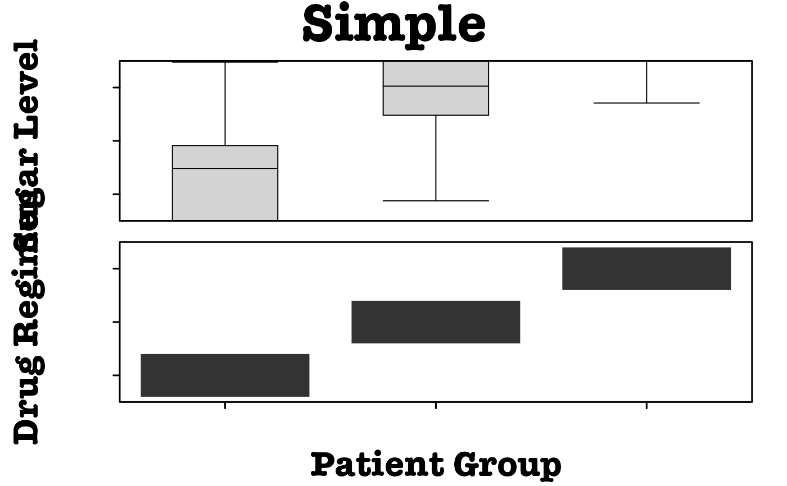
# Simple example of multiplot with adjusted plot sizes
create.multiplot(
# filename = tempfile(pattern = 'Multiplot_Simple_Plot_Sizes', fileext = '.tiff'),
plot.objects = list(simple.heatmap, simple.boxplot),
main = "Simple plot sizes",
xlab.label = c("Patient Group"),
# y-axis labels must be spaced with tabs or spaces to properly align
ylab.label = c("", "Sugar Level", "", "Drug Regimen"),
ylab.padding = 7,
xaxis.cex = 0.7,
yaxis.cex = 0.7,
# Set the relative heights of the plots
panel.heights = c(3,1),
resolution = 100
);
#> Warning: NAs introduced by coercion
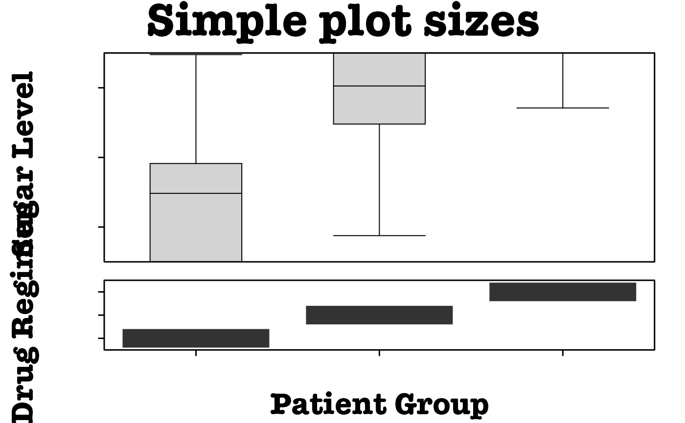
simple.violin <- create.violinplot(
formula = x ~ y,
data = simple.data,
col = 'lightgrey'
);
# Simple example of multiplot with custom layout
create.multiplot(
# filename = tempfile(pattern = 'Multiplot_Simple_Layout', fileext = '.tiff'),
plot.objects = list(simple.heatmap, simple.boxplot, simple.violin),
main = "Simple layout",
xlab.label = c("Patient Group"),
ylab.label = c("", "Sugar Level", "", "Drug Regimen"),
ylab.padding = 7,
xaxis.cex = 0.7,
yaxis.cex = 0.7,
panel.heights = c(3,1),
# Set how many rows & columns are in the layout
plot.layout = c(2,2),
# Set whether to plot or not in the space (fills from bottom left to top right)
layout.skip = c(FALSE, TRUE, FALSE, FALSE),
# Move plots closer together
x.spacing = 0,
# Remove doubled internal axis
yat = list(
seq(1,3,1),
seq(-2, 8, 2),
c()
),
resolution = 100
);
#> Warning: NAs introduced by coercion
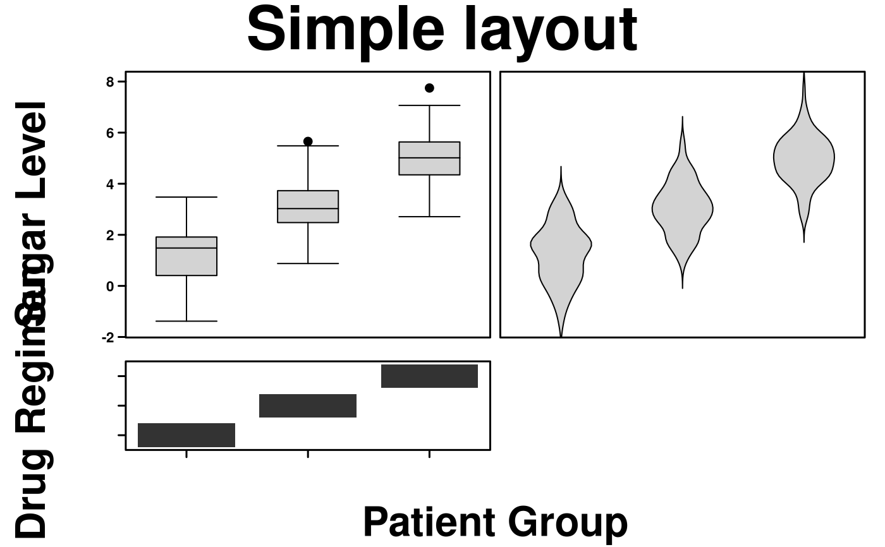
# Example of how to take parameter values from individual plots
# This programming structure allows for including the individual customization
# of plots to the final multiplot
all_data <- data.frame(
a = rnorm(n = 25, mean = 0, sd = 0.75),
b = rnorm(n = 25, mean = 0, sd = 0.75),
c = rnorm(n = 25, mean = 0, sd = 0.75),
d = rnorm(n = 25, mean = 0, sd = 0.75),
e = rnorm(n = 25, mean = 0, sd = 0.75),
f = rnorm(n = 25, mean = 0, sd = 0.75),
x = rnorm(n = 25, mean = 5),
y = seq(1, 25, 1)
);
plot.heatmap <- function(all_data){
# save the parameter values that will be reused in the multiplot
multiplot_visuals <- list(
xlab.label = '',
xaxis.labels = NULL,
xat = NULL,
ylab.label = 'Genes of Interest',
yaxis.labels = c("BRCA1", "BRCA2", "APC", "TIN", "ARG", "FOO"),
yat = c(1,2,3,4,5,6)
);
# create the plot -- this allows for previewing of the individual plot
heatmap.formatted <- create.heatmap(
x = all_data[,1:6],
clustering.method = 'none',
colour.scheme = c('magenta','white','green'),
print.colour.key = FALSE,
xlab.label = multiplot_visuals$xlab.label,
xaxis.lab = multiplot_visuals$xaxis.labels,
xat = multiplot_visuals$xat,
ylab.label = multiplot_visuals$ylab.label,
yaxis.lab = multiplot_visuals$yaxis.labels,
yat = multiplot_visuals$yat
);
# return both the plot and the relevant parameter values
return(
list(
the_plot = heatmap.formatted,
visuals = multiplot_visuals
)
)
}
plot.barplot <- function(all_data) {
# save the parameter values that will be reused in the multiplot
multiplot_visuals <- list(
xlab.label = '',
xaxis.labels = NULL,
xat = NULL,
ylab.label = 'Importance',
yaxis.labels = seq(1, ceiling(max(all_data$x)), 1),
yat = seq(1, ceiling(max(all_data$x)), 1)
);
# create the plot -- this allows for previewing of the individual plot
barplot.formatted <- create.barplot(
formula = x ~ y,
data = all_data[,7:8],
border.lwd = 0,
col = 'grey',
xlab.label = multiplot_visuals$xlab.label,
xaxis.lab = multiplot_visuals$xaxis.labels,
xat = multiplot_visuals$xat,
ylab.label = multiplot_visuals$ylab.label,
yaxis.lab = multiplot_visuals$yaxis.labels,
yat = multiplot_visuals$yat
);
# return both the plot and the relevant parameter values
return(
list(
the_plot = barplot.formatted,
visuals = multiplot_visuals
)
)
}
plot_functions <- c('plot.heatmap', 'plot.barplot');
# run the functions
all_plots <- lapply(
plot_functions,
function(funName){
eval(parse(text = paste0(funName, '(all_data)')))
}
);
create.multiplot(
# filename = tempfile(pattern = 'Multiplot_Formatting', fileext = '.tiff'),
main = "Formatting",
plot.objects = lapply(all_plots, function(aPlot) aPlot$the_plot),
panel.heights = c(1,3),
xaxis.cex = 1,
yaxis.cex = 1,
ylab.padding = 8,
yat = lapply(all_plots,function(aPlot) aPlot$visuals$yat),
xlab.label = lapply(all_plots,function(aPlot) aPlot$visuals$xlab.label),
ylab.label = rev(lapply(all_plots,function(aPlot) aPlot$visuals$ylab.label)),
yaxis.labels = lapply(all_plots,function(aPlot) aPlot$visuals$yaxis.labels),
resolution = 100
);
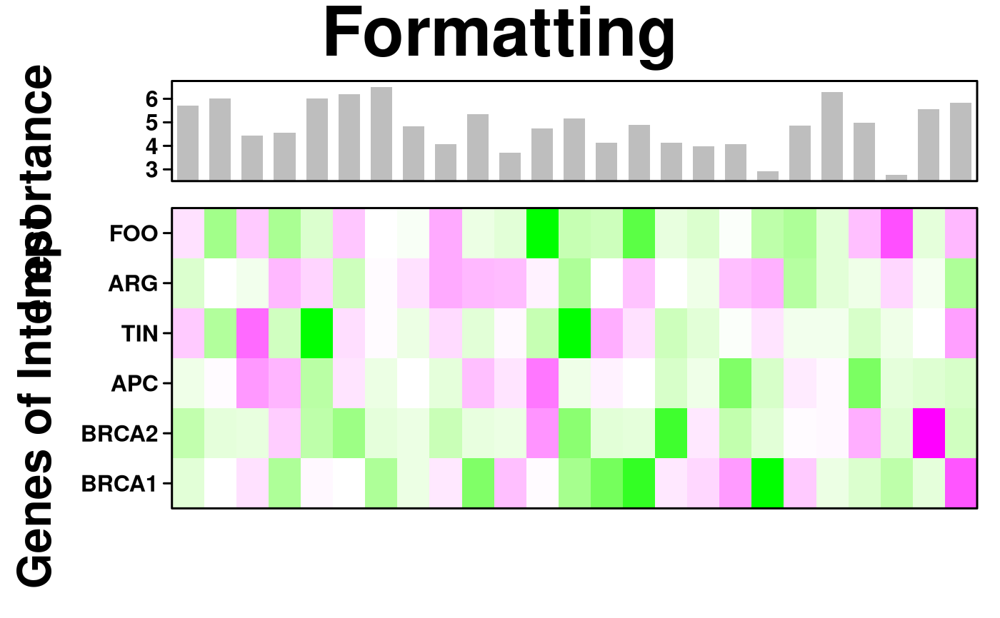
data_bars <- data.frame(
x = sample(x = 5:35, size = 10),
y = seq(1,10,1)
);
data_cov <- data.frame(
x = rnorm(n = 10, mean = 0, sd = 0.75),
y = rnorm(n = 10, mean = 0, sd = 0.75),
z = rnorm(n = 10, mean = 0, sd = 0.75)
);
# Create main barplot
bars <- create.barplot(
formula = x~y,
data = data_bars,
ylimits = c(0,35),
sample.order = 'increasing',
border.lwd = 0
);
# Make covariate bars out of heatmaps
cov_1 <- create.heatmap(
x = as.matrix(data_bars$y),
clustering.method = 'none',
scale.data = FALSE,
colour.scheme = default.colours(4),
grid.col = TRUE,
col.colour = 'black',
# col.lwd = 10,
total.col = 5,
print.colour.key = FALSE,
yaxis.tck = 0,
axes.lwd = 0
);
cov_2 <- create.heatmap(
x = as.matrix(data_cov$y),
clustering.method = 'none',
scale.data = FALSE,
colour.scheme = c("lightblue","dodgerblue2", "dodgerblue4"),
grid.col = TRUE,
col.colour = 'black',
# col.lwd = 10,
total.col = 4,
print.colour.key = FALSE,
yaxis.tck = 0
);
#> Warning: Colour allocation scheme failed, moving to a default method
cov_3 <- create.heatmap(
x = as.matrix(data_cov$z),
clustering.method = 'none',
scale.data = FALSE,
colour.scheme = c("grey","coral1"),
grid.col = TRUE,
col.colour = 'black',
# col.lwd = 10,
total.col = 3,
print.colour.key = FALSE,
yaxis.tck = 0
);
# Generate legends outside of individual functions
legend <- legend.grob(
list(
legend = list(
colours = default.colours(4),
title = "Batch",
labels = LETTERS[1:4],
size = 3,
title.cex = 1,
label.cex = 1,
border = 'black'
),
legend = list(
colours = c("lightblue","dodgerblue2","dodgerblue4"),
title = "Grade",
labels = c("Low","Normal","High"),
size = 3,
title.cex = 1,
label.cex = 1,
border = 'black'
),
legend = list(
colours = c("grey","coral1"),
title = "Biomarker",
labels = c("Not present","Present"),
size = 3,
title.cex = 1,
label.cex = 1,
border = 'black'
)
),
title.just = 'left'
);
# Assemble plot using multiplot function
create.multiplot(
# filename = tempfile(pattern = 'Multiplot_Barchart', fileext = '.tiff'),
main = 'Multiplot with bar chart',
plot.objects = list(cov_3, cov_2, cov_1, bars),
ylab.label = c("\t", "Response to treatment","\t"),
xlab.label = "Sample characteristics",
panel.heights = c(1, 0.05,0.05,0.05),
y.spacing = c(-1, -1, -1, 0),
xaxis.lab = NULL,
yaxis.lab = list(NULL, NULL, NULL, seq(0, 350, 50)),
legend = list(right = list(fun = legend)),
print.new.legend = TRUE,
xaxis.alternating = 0,
main.cex = 1,
ylab.cex = 1,
xlab.cex = 1,
xlab.to.xaxis.padding = -2,
yaxis.cex = 1,
description = "Multiplot example created by BoutrosLab.plotting.general",
resolution = 200
);
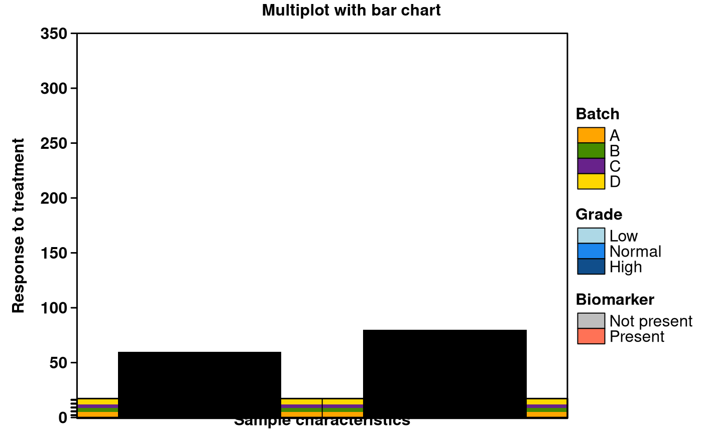
# \donttest{
gene_data <- data.frame(
x = rnorm(n = 25, mean = 0, sd = 0.75),
y = rnorm(n = 25, mean = 0, sd = 0.75),
z = rnorm(n = 25, mean = 0, sd = 0.75),
v = rnorm(n = 25, mean = 0, sd = 0.75),
w = rnorm(n = 25, mean = 0, sd = 0.75),
a = rnorm(n = 25, mean = 0, sd = 0.75),
b = rnorm(n = 25, mean = 0, sd = 0.75),
c = rnorm(n = 25, mean = 0, sd = 0.75)
);
# main heatmap
main <- create.heatmap(
x = gene_data,
xaxis.tck = 0,
yaxis.tck = 0,
colourkey.cex = 1,
clustering.method = 'none',
axes.lwd = 1,
ylab.label = 'y',
xlab.label = 'x',
yaxis.fontface = 1,
xaxis.fontface = 1,
xlab.cex = 1,
ylab.cex = 1,
main.cex = 1,
colour.scheme = c('red','white','turquoise')
);
key_data <- data.frame(
x <- seq(-50,50,1)
);
# colour key for heatmap
key <- create.heatmap(
x = key_data,
clustering.method = 'none',
scale.data = FALSE,
colour.scheme = c('turquoise','white','red'),
print.colour.key = FALSE,
yaxis.tck = 0,
xat = c(10,90),
xaxis.lab = c('low', 'high')
);
top_data <- data.frame(
x = rnorm(n = 25, mean = 0, sd = 0.75),
y = seq(1,25,1)
);
# top barplot
top <- create.barplot(
formula = x~y,
data = top_data,
border.lwd = 0
);
side_data <- data.frame(
x = rnorm(n = 8, mean = 0, sd = 0.75),
y = seq(1,8,1)
);
# side barplot
side <- create.barplot(
formula = x~y,
data = side_data,
border.lwd = 0,
sample.order = 'decreasing',
plot.horizontal = TRUE
);
# assembling final figure
create.multiplot(
# filename = tempfile(pattern = 'Multiplot_with_heatmap', fileext = '.tiff'),
main = 'Multiplot with heatmap',
plot.objects = list(key, main, side, top),
panel.heights = c(0.25, 1, 0.05),
panel.widths = c(1, 0.25),
plot.layout = c(2, 3),
layout.skip = c(FALSE, TRUE, FALSE, FALSE, FALSE, FALSE),
xaxis.alternating = 0,
xaxis.cex = 1,
yaxis.cex = 1,
xlab.cex = 1,
ylab.cex = 1,
xlab.label = c('\t', 'Samples', '\t', ' Importance'),
ylab.label = c( 'Amount (g)', '\t', '\t', 'Genes', '\t', '\t'),
ylab.padding = 6,
xlab.to.xaxis.padding = 0,
xaxis.lab = list(
c("",'low',"", "",'high', ""),
LETTERS[1:25],
seq(0,5,1),
NULL
),
yaxis.lab = list(
NULL,
replicate(8, paste(sample(LETTERS, 4, replace = TRUE), collapse = "")),
NULL,
seq(0,4,0.05)
),
x.spacing = -0.5,
y.spacing = c(0,-1),
xaxis.fontface = 1,
yaxis.fontface = 1
);
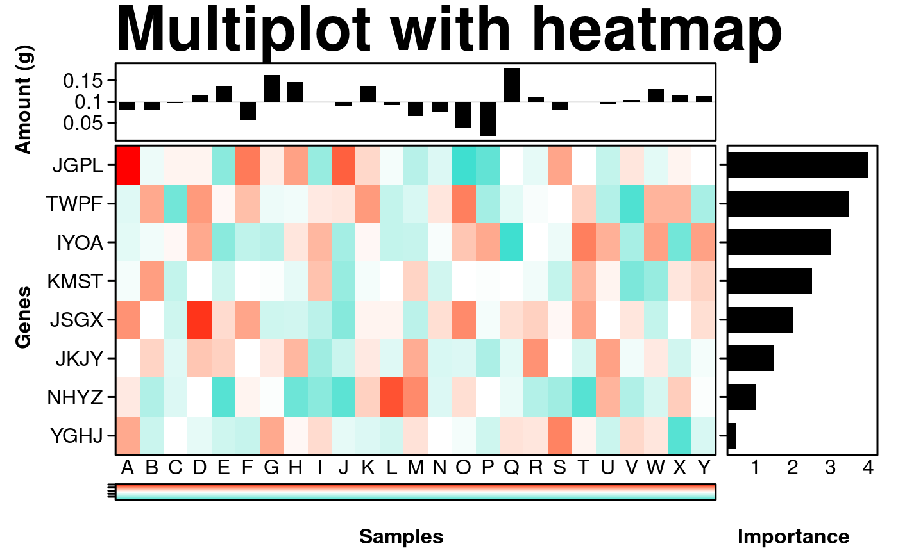
# Set up plots for complex example
# Dotmap
spot_sizes <- function(x) { 0.5 * abs(x); }
dotmap_dot_colours <- c('red','blue');
spot_colours <- function(x) {
colours <- rep('white', length(x));
colours[sign(x) == -1] <- dotmap_dot_colours[1];
colours[sign(x) == 1] <- dotmap_dot_colours[2];
return(colours);
};
# Dotmap colours
orange <- rgb(249/255, 179/255, 142/255);
blue <- rgb(154/255, 163/255, 242/255);
green <- rgb(177/255, 213/255, 181/255);
bg.colours <- c(green, orange, blue, 'gold', 'skyblue', 'plum');
dotmap <- create.dotmap(
x = CNA[1:15,1:58],
bg.data = SNV[1:15,1:58],
# Set the colour scheme
colour.scheme = bg.colours,
# Set the breakpoints for the colour scheme (determined from the data)
at = c(0,1,2,4,6,7,8),
# Specify the total number of colours (+1 for the fill colour)
total.colours = 7,
col.colour = 'white',
row.colour = 'white',
bg.alpha = 1,
fill.colour = 'grey95',
spot.size.function = spot_sizes,
spot.colour.function = spot_colours,
xaxis.tck = 0,
xaxis.cex = 0.7,
yaxis.cex = 0.7,
xaxis.rot = 90
);
# Dotmap legend
dotmap_legend <- list(
legend = list(
colours = bg.colours,
labels = c('Nonsynonymous','Stop Gain','Frameshift deletion',
'Nonframeshift deletion', 'Splicing', 'Unknown'),
border = 'white',
title = 'SNV',
pch = 15
),
legend = list(
colours = dotmap_dot_colours,
labels = c('Gain','Loss'),
border = 'white',
title = 'CNA',
pch = 19
)
);
dotmap_legend.grob <- legend.grob(
legends = dotmap_legend,
title.just = 'left',
label.cex = 0.7,
title.cex = 0.7
);
# Covariates
cov.colours <- c(
c('dodgerblue','pink'),
c('grey','darkseagreen1','seagreen2','springgreen3','springgreen4'),
c('peachpuff','tan4')
);
# the heatmap expects numeric data
cov.data <- patient[-c(4:9)];
cov.data[cov.data == 'male'] <- 1;
cov.data[cov.data == 'female'] <- 2;
cov.data[is.na(cov.data)] <- 3;
cov.data[cov.data == 'I'] <- 4;
cov.data[cov.data == 'II'] <- 5;
cov.data[cov.data == 'III'] <- 6;
cov.data[cov.data == 'IV'] <- 7;
cov.data[cov.data == 'MSS'] <- 8;
cov.data[cov.data == 'MSI-High'] <- 9;
cov.data$sex <- as.numeric(cov.data$sex);
cov.data$stage <- as.numeric(cov.data$stage);
cov.data$msi <- as.numeric(cov.data$msi);
covariates <- create.heatmap(
x = cov.data,
clustering.method = 'none',
colour.scheme = as.vector(cov.colours),
total.colours = 10,
row.colour = 'white',
col.colour = 'white',
grid.row = TRUE,
grid.col = TRUE,
yaxis.tck = 0,
print.colour.key = FALSE
);
#> Warning: number of colum ns exceeded limit (50), column lines are turned off.
#> Please set "force.grid.col" to TRUE to override this
# Coviate Legends
cov_legends <- list(
legend = list(
colours = cov.colours[8:9],
labels = c('MSS','MSI-High'),
border = 'white',
title = 'MSI'
),
legend = list(
colours = cov.colours[3:7],
labels = c('NA', 'I','II','III','IV'),
border = 'white',
title = 'Stage'
),
legend = list(
colours = cov.colours[1:2],
labels = c('Male','Female'),
border = 'white',
title = 'Sex'
)
);
cov_legend.grob <- legend.grob(
legends = cov_legends,
title.just = 'left',
label.cex = 0.7,
title.cex = 0.7,
layout = c(3,1)
);
# Multiplot of dotmap and covariates
create.multiplot(
# filename = tempfile(pattern = 'Multiplot_Dotmap_Cov', fileext = '.tiff'),
plot.objects = list(covariates, dotmap),
main = 'Dotmap & covariates',
panel.heights = c(1,0.1),
# Set some of the yat to NULL to let R figure it out
yat = c(seq(1,15,1), NULL),
xat = NULL,
yaxis.lab = list(
c('Sex','Stage','MSI'),
rev(rownames(SNV)[1:15])
),
yaxis.cex = 0.7,
y.spacing = -1,
legend = list(
bottom = list(
x = 0.10,
y = 0.50,
fun = cov_legend.grob
),
right = list(
x = 0.10,
y = 0.50,
fun = dotmap_legend.grob
)
),
# This parameter must be set for the legend to appear
print.new.legend = TRUE,
# Adding spacing for the legend
bottom.padding = 5
);
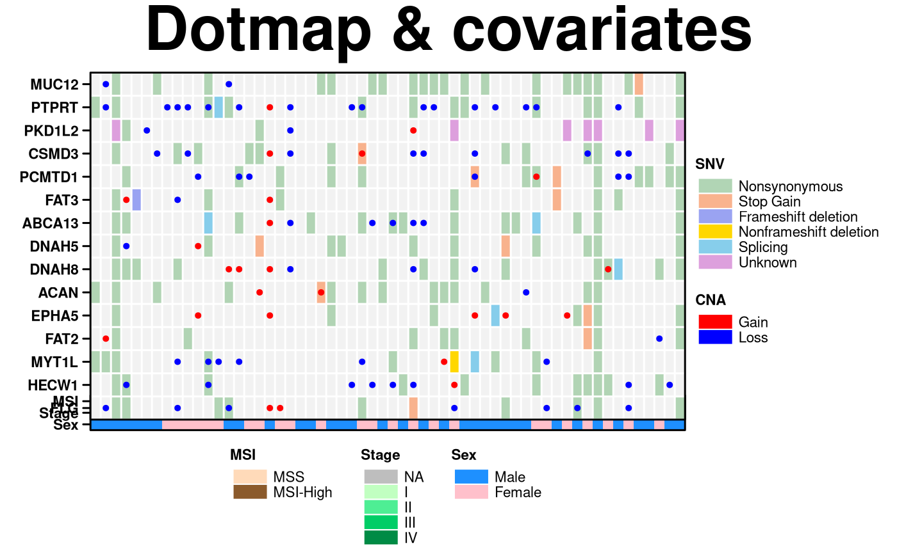
# Add more plots, using more complex layout
# grouped barplot
groupedbar_colours <- c('indianred1','indianred4');
count.SNV <- apply(SNV[1:15,], 2, function(x){length(which(!is.na(x)))});
count.CNA <- apply(CNA[1:15,], 2, function(x){length(which(!(x==0)))});
grouped_data <- data.frame(
values = c(count.SNV, count.CNA),
samples = rep(colnames(SNV),2),
group = rep(c('SNV','CNA'), each = 58)
);
grouped_barplot <- create.barplot(
formula = values ~ samples,
data = grouped_data,
groups = grouped_data$group,
col = groupedbar_colours,
border.col = 'white'
);
# stacked barplot
col_one <- rgb(255/255, 225/255, 238/255);
col_two <- rgb(244/255, 224/255, 166/255);
col_thr <- rgb(177/255, 211/255, 154/255);
col_fou <- rgb(101/255, 180/255, 162/255);
col_fiv <- rgb(51/255, 106/255, 144/255);
stackedbar_colours <- c(col_one, col_two, col_thr, col_fou, col_fiv, 'orchid4');
stacked_data_labels <- c('C>A/G>T','C>T/G>A','C>G/G>C','T>A/A>T','T>G/A>C', 'T>C/A>G');
stacked_data <- data.frame(
values = c(patient$prop.CAGT, patient$prop.CTGA, patient$prop.CGGC, patient$prop.TAAT,
patient$prop.TGAC, patient$prop.TCAG),
divisions = rep(rownames(patient), 6),
group = rep(stacked_data_labels, each = 58)
);
# Generate stacked barplot
stacked_barplot <- create.barplot(
formula = values ~ divisions,
data = stacked_data,
groups = stacked_data$group,
stack = TRUE,
col = stackedbar_colours,
border.col = 'white'
);
# barchart legends
stackedbar_legend <- list(
legend = list(
colours = rev(stackedbar_colours),
labels = rev(stacked_data_labels),
border = 'white'
)
);
groupedbar_legend <- list(
legend = list(
colours = groupedbar_colours,
labels = c('CNA','SNV'),
border = 'white'
)
);
groupedbar_legend.grob <- legend.grob(
legends = groupedbar_legend,
title.just = 'left',
label.cex = 0.7,
title.cex = 0.7
);
stackedbar_legend.grob <- legend.grob(
legends = stackedbar_legend,
title.just = 'left',
label.cex = 0.7,
title.cex = 0.7
);
# Expression change Segplot
# locate matching genes
rows.to.keep <- which(match(rownames(microarray), rownames(SNV)[1:15], nomatch = 0) > 0);
segplot.data <- data.frame(
min = apply(microarray[rows.to.keep,1:58], 1, min),
max = apply(microarray[rows.to.keep,1:58], 1, max),
median = apply(microarray[rows.to.keep,1:58], 1, median),
order = seq(1,15,1)
);
segplot <- create.segplot(
formula = order ~ min + max,
data = segplot.data,
main = 'Medians',
centers = segplot.data$median,
pch = 15
);
# Create multiplot
plots <- list(covariates, dotmap, segplot, stacked_barplot, grouped_barplot);
create.multiplot(
# filename = tempfile(pattern = 'Multiplot_Complex', fileext = '.tiff'),
main = 'Complex',
# These dimensions make the plot look much more proportional
width = 12,
height = 8,
plot.objects = plots,
panel.heights = c(0.2, 0.2, 1, 0.1),
panel.widths = c(1,0.1),
plot.layout = c(2, 4),
layout.skip = c(FALSE,TRUE,FALSE,FALSE,FALSE,TRUE,FALSE,TRUE),
xaxis.lab = list(
NULL,
NULL,
seq(0,14,2),
NULL,
NULL),
yaxis.lab = list(
c('Sex','Stage','MSI'),
rownames(SNV)[1:15],
NULL,
seq(0.0,1.0,0.2),
seq(0,16,4)
),
x.spacing = -0.5,
y.spacing = -1.5,
xaxis.cex = 0.7,
yaxis.cex = 0.7,
xat = list(
NULL,
NULL,
seq(0,10,2.5),
NULL,
NULL
),
yat = list(
seq(1,3,1),
seq(1,15,1),
NULL,
seq(0.0,1.0,0.2),
seq(0,16,4)
),
ylab.label = c( 'Mutation', 'Proportion','\t','\t','\t','\t','\t'),
ylab.cex = 0.7,
xlab.cex = 0.7,
xlab.to.xaxis.padding = 2,
key.bottom.padding = 5,
bottom.padding = 5,
right.padding = 8,
legend = list(
bottom = list(
x = 0.10,
y = 0.50,
fun = cov_legend.grob
),
inside = list(
x = 0.91,
y = 0.96,
fun = groupedbar_legend.grob
),
inside = list(
x = 0.91,
y = 0.86,
fun = stackedbar_legend.grob
),
left = list(
fun = dotmap_legend.grob,
args = list(
key = list(
points = list(
pch = c(15,15,19,19)
)
)
)
)
),
print.new.legend = TRUE,
resolution = 200
);
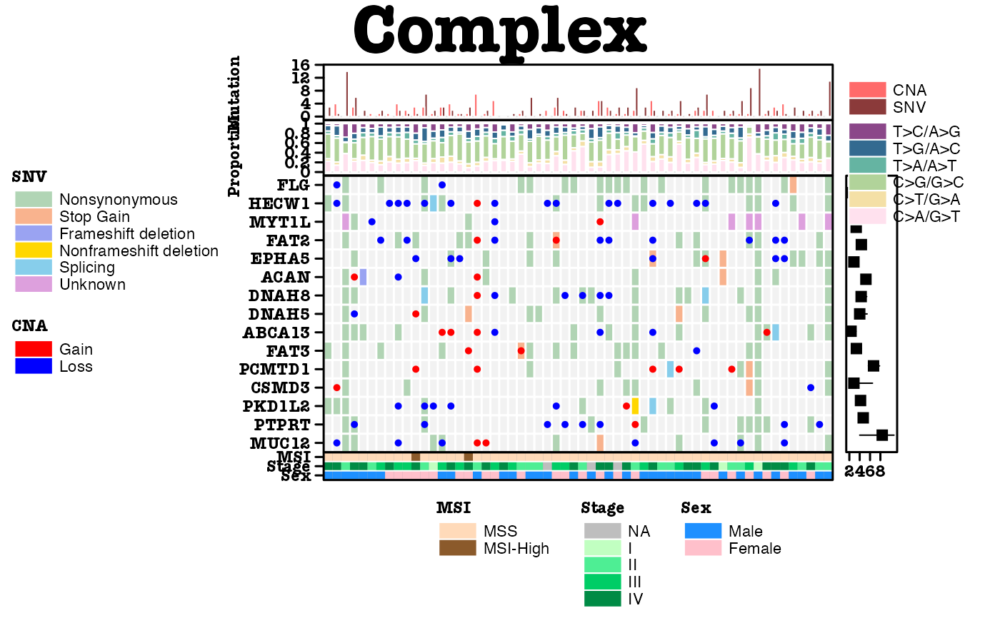
# Nature style
create.multiplot(
# filename = tempfile(pattern = 'Multiplot_Nature_style', fileext = '.tiff'),
plot.objects = list(simple.heatmap, simple.boxplot),
main = "Nature style",
ylab.padding = 7,
xaxis.cex = 0.7,
yaxis.cex = 0.7,
# set style to Nature
style = 'Nature',
# demonstrating how to italicize character variables
ylab.label = c(expression(paste('italicized ', italic('a'))),
expression(paste('italicized ', italic('b')))),
# demonstrating how to create en-dashes
xlab.label = c(expression(paste('en dashs: 1','\u2013', '10'^'\u2013', ''^3))),
resolution = 200
);
#> Warning: NAs introduced by coercion
#> Warning: Setting resolution to 1200 dpi.
#> Warning: Nature also requires italicized single-letter variables and en-dashes
#> for ranges and negatives. See example in documentation for how to do this.
#> Warning: Avoid red-green colour schemes, create TIFF files, do not outline the figure or legend
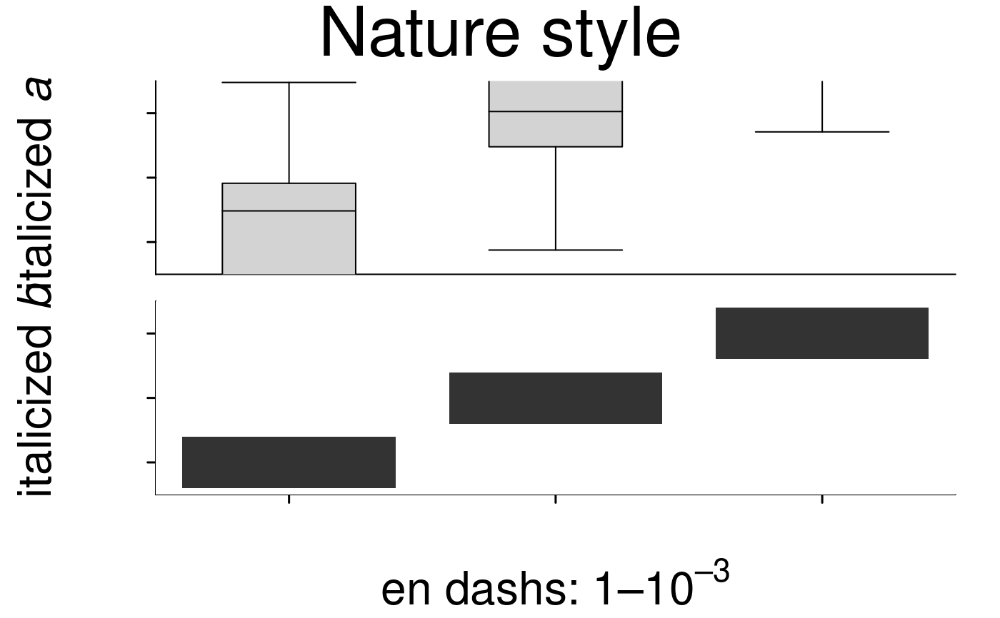
# Create a multiplot with a heatmap, key like legend and barplot
# First create a heatmap object
simple.heatmap <- create.heatmap(patient[, 4:6],
clustering.method = 'none',
print.colour.key = FALSE,
scale=TRUE,
same.as.matrix = FALSE,
colour.scheme = c('gray0','grey100'),
fill.colour = 'grey95'
);
# and a simple bar plot
pvals <- data.frame(
order = c(1:3),
pvalue = -log10(c(0.0004, 0.045, 0.0001)),
stringsAsFactors = FALSE
)
#create bar plot
simple.bar <- create.barplot(
formula = order ~ rev(pvalue),
data = pvals,
xlimits = c(0,5),
plot.horizontal=TRUE
);
# then the covariates heatmap
cov.colours <- c(
c('dodgerblue','pink'),
c('grey','darkseagreen1','seagreen2','springgreen3','springgreen4'),
c('peachpuff','tan4')
);
# the heatmap expects numeric data
cov.data <- patient[-c(4:9)];
cov.data[cov.data == 'male'] <- 1;
cov.data[cov.data == 'female'] <- 2;
cov.data[is.na(cov.data)] <- 3;
cov.data[cov.data == 'I'] <- 4;
cov.data[cov.data == 'II'] <- 5;
cov.data[cov.data == 'III'] <- 6;
cov.data[cov.data == 'IV'] <- 7;
cov.data[cov.data == 'MSS'] <- 8;
cov.data[cov.data == 'MSI-High'] <- 9;
cov.data$sex <- as.numeric(cov.data$sex);
cov.data$stage <- as.numeric(cov.data$stage);
cov.data$msi <- as.numeric(cov.data$msi);
covariates <- create.heatmap(
x = cov.data,
clustering.method = 'none',
colour.scheme = as.vector(cov.colours),
total.colours = 10,
row.colour = 'white',
col.colour = 'white',
grid.row = TRUE,
grid.col = TRUE,
yaxis.tck = 0,
print.colour.key = FALSE
);
#> Warning: number of colum ns exceeded limit (50), column lines are turned off.
#> Please set "force.grid.col" to TRUE to override this
covariates2 <- create.heatmap(
x = patient[4],
clustering.method = 'none',
colour.scheme = c("#00007F", "#007FFF"),
row.colour = 'white',
col.colour = 'white',
grid.row = TRUE,
grid.col = TRUE,
yaxis.tck = 0,
print.colour.key = FALSE
);
#> Warning: number of rows exceeded limit (50), row lines are turned off.
#> Please set "force.grid.row" to TRUE to override this
cov_legends <- list(
legend = list(
colours = c("white", "black"),
labels = c('0','2'),
border = 'grey',
title = 'Tumour Mass (kg)',
continuous = TRUE,
height = 3
),
legend = list(
colours = cov.colours[8:9],
labels = c('MSS','MSI-High'),
border = 'white',
title = 'MSI'
),
legend = list(
colours = cov.colours[3:7],
labels = c('NA', 'I','II','III','IV'),
border = 'white',
title = 'Stage'
),
legend = list(
colours = cov.colours[1:2],
labels = c('Male','Female'),
border = 'white',
title = 'Sex'
),
legend = list(
colours = c("#00007F", "#007FFF"),
labels = c('0.09','0.72'),
border = 'grey',
title = 'CAGT',
continuous = TRUE,
height = 2,
width = 3,
angle = -90,
tck = 1,
tck.number = 2,
at = c(0,100)
)
);
cov_legend.grob <- legend.grob(
legends = cov_legends,
title.just = 'left',
label.cex = 0.7,
title.cex = 0.7
);
# Now bring it was together using multiplot
create.multiplot(
main = 'multiplot with colour key legend',
main.cex = 1,
# filename = tempfile(pattern = 'MultiPlot_With_ColorKey_Legend', fileext = '.tiff'),
plot.objects = list(covariates, covariates2, simple.heatmap, simple.bar),
panel.heights = c(1,0.1,0.35),
panel.widths = c(1,0.25),
plot.layout = c(2,3),
layout.skip = c(FALSE, TRUE, FALSE, TRUE,FALSE,FALSE),
xaxis.alternating = 1,
# Set some of the yat to NULL to let R figure it out
yaxis.lab = list(
c('Sex','Stage','MSI'),
NULL,
c('one','two','three'),
NULL
),
xaxis.lab = list(
NULL,
NULL,
NULL,
seq(0,5,1)
),
xat = list(
NULL,
NULL,
NULL,
seq(0,5,1)
),
yaxis.tck = 0,
xlab.to.xaxis.padding = 0,
yaxis.cex = 0.5,
xaxis.cex = 0.5,
xlab.cex = 0.75,
ylab.cex = 0.75,
xlab.label = c('\t', 'samples', '\t', ' -log10 pval'),
ylab.label = c("", "Test", "","CAGT", "covariates"),
y.spacing = 0,
x.spacing = 0,
legend = list(
left = list(
x = 0.10,
y = 0.50,
fun = cov_legend.grob
)
),
left.padding = 2.5,
# This parameter must be set for the legend to appear
print.new.legend = TRUE
);
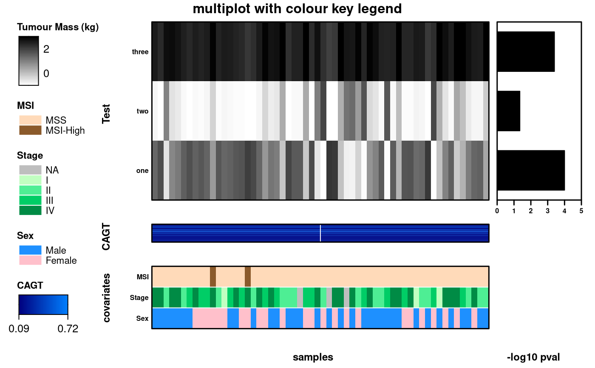
BarPlotDataRetLabels <- data.frame(x = c("test1","test2","test3","test4"),
y = c(10000,13000,12000,6700))
HeatMapDataRetLabels <- matrix(nrow = 4, ncol = 4, data = rnorm(16,1,1))
bpRet <- create.barplot(
formula = y~x,
data = BarPlotDataRetLabels,
xaxis.lab = NULL,
xat = 0
);
hmRet <- create.heatmap(
x= HeatMapDataRetLabels,
yaxis.lab = c("Gene 1", "Gene 2", "Gene 3", "Gene 4"),
yat = c(1,2,3,4),
clustering.method = 'none'
);
create.multiplot(
# filename = tempfile(pattern = 'Multiplot_RetrievePlotLabels', fileext = '.tiff'),
plot.objects = list(hmRet,bpRet,bpRet),
print.new.legend = TRUE,
xlab.label = c('Samples'),
ylab.padding = 12,
y.spacing = c(0,0),
panel.heights = c(0.25,1,0.25),
plot.labels.to.retrieve = c(1,2,3)
);
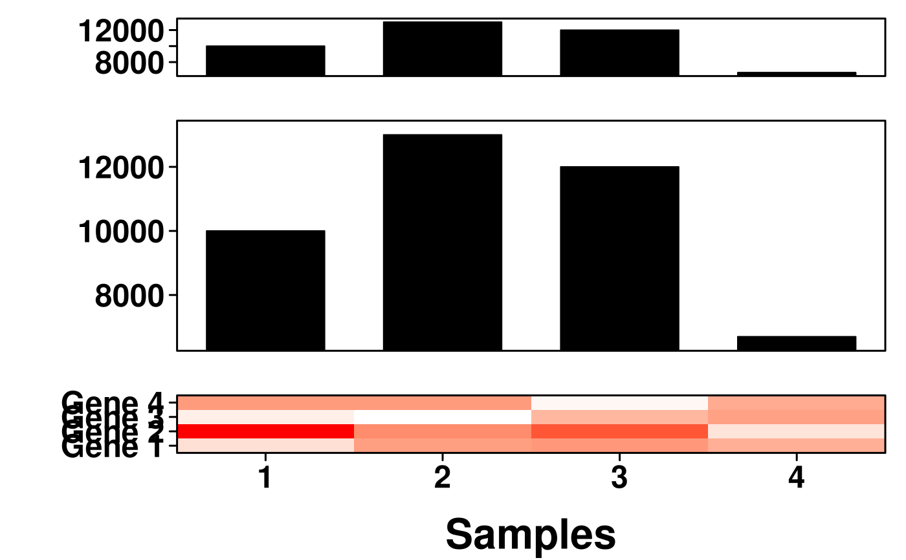
create.multiplot(
# filename = tempfile(pattern = 'Multiplot_Retrieve_Specefic_Labels', fileext = '.tiff'),
plot.objects = list(simple.heatmap, simple.boxplot),
main = "Simple",
xlab.label = c("Patient Group"),
xaxis.labels = c("1","Drug Regimen"),
# The plotting function throws an error if this is not included
ylab.label = c("Sugar Level", "Drug Regimen"),
ylab.padding = 7,
# Parameters set in the multiplot will override settings in individual plots
xaxis.cex = 0.7,
yaxis.cex = 0.7,
yaxis.labels = c(NA,NA),
xat = list(TRUE,TRUE),
yat = list(TRUE,TRUE),
plot.labels.to.retrieve = c(1),
xlimits = list(NULL,c("A","B","C")),
ylimits = list(NULL,c(-3,10))
);
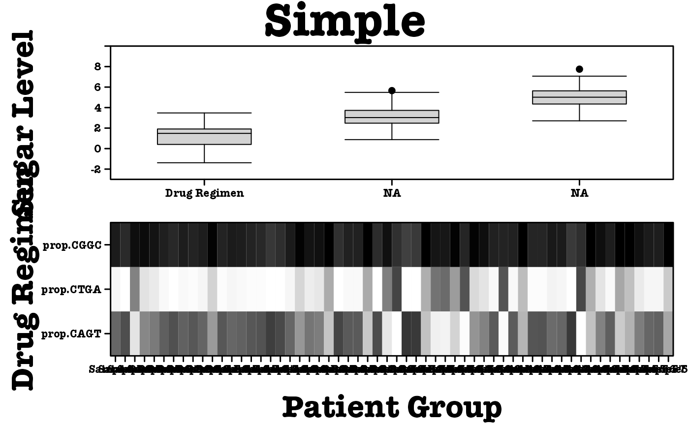
# Dendrogram provided
dist <- data.frame(
a = rnorm(100, 1),
b = rnorm(100, 3),
c = rnorm(100, 5)
);
simple.data <- data.frame(
x = c(dist$a, dist$b, dist$c),
y = rep(LETTERS[1:3], each = 100)
);
col.dendrogram <- BoutrosLab.plotting.general::create.dendrogram(
x = microarray[1:20, 1:20],
cluster.dimension = 'col'
);
row.dendrogram <- BoutrosLab.plotting.general::create.dendrogram(
x = microarray[1:20, 1:20],
cluster.dimension = 'row'
);
simple.boxplot <- create.boxplot(
formula = x ~ y,
data = simple.data,
col = 'lightgrey'
);
simple.heatmap <- create.heatmap(
x = microarray[1:20, 1:20],
main = 'Dendrogram provided',
xlab.label = 'Genes',
ylab.label = 'Samples',
xaxis.lab = NA,
yaxis.lab = 1:20,
xaxis.cex = 0.75,
yaxis.cex = 0.75,
xaxis.fontface = 1,
yaxis.fontface = 1,
colourkey.cex = 1,
colourkey.labels.at = seq(2,12,1),
colour.alpha = 'automatic',
# note: row/column dendrograms are switched because the function inverts rows and columns
clustering.method = 'none',
row.dendrogram = col.dendrogram,
col.dendrogram = row.dendrogram,
# Adjusting the size of the dendrogram
right.dendrogram.size = 3,
top.dendrogram.size = 2.5,
description = 'Heatmap created using BoutrosLab.plotting.general'
);
legend <- legend.grob(
list(
legend = list(
colours = default.colours(4),
title = "Batch",
labels = LETTERS[1:4],
size = 3,
title.cex = 1,
label.cex = 1,
border = 'black'
),
legend = list(
colours = c("lightblue","dodgerblue2","dodgerblue4"),
title = "Grade",
labels = c("Low","Normal","High"),
size = 3,
title.cex = 1,
label.cex = 1,
border = 'black'
),
legend = list(
colours = c("grey","coral1"),
title = "Biomarker",
labels = c("Not present","Present"),
size = 3,
title.cex = 1,
label.cex = 1,
border = 'black'
)
),
title.just = 'left'
);
create.multiplot(
# filename = tempfile(pattern = 'MultiPlot_getDendrograms', fileext = '.tiff'),
plot.objects = list(simple.heatmap, simple.boxplot),
main = "Simple",
xlab.label = c("Patient Group"),
y.spacing = 3,
# The plotting function throws an error if this is not included
ylab.label = c("Sugar Level", "Drug Regimen"),
ylab.padding = 7,
# Parameters set in the multiplot will override settings in individual plots
xaxis.cex = 0.7,
yaxis.cex = 0.7,
yaxis.lab = list(
c(1,2,3,4,5,6,7,8,9,10,11,12,13,14,15,16,17,18,19,20),
c(-2,-1,0,1,2,3,4,5)
),
xaxis.lab = list(c(1,2,3,4,5,6,7,8,9,10,11,12,13,14,15, 16,17,18,19,20),c(1,2,3)),
xaxis.rot = 45,
xaxis.rot.top = 90,
legend = list(right = list(fun = legend)),
print.new.legend = TRUE,
get.dendrogram.from = 1,
dendrogram.right.size = 0.40, dendrogram.right.x = 29, dendrogram.right.y = 67,
dendrogram.top.size = 1, dendrogram.top.x = 110, dendrogram.top.y = -180
);
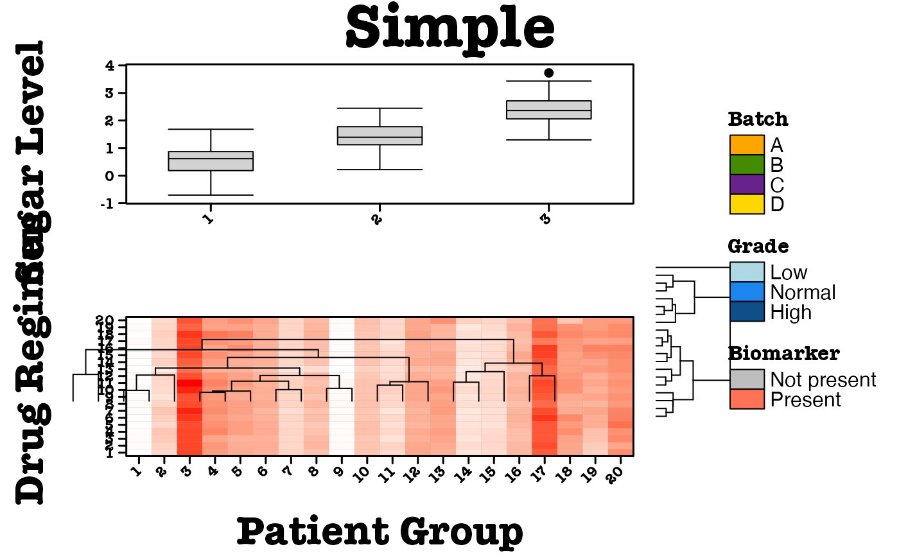
# }